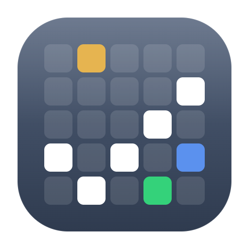

设计交付说明
本文件是「考勤复核工作台」桌面应用的完整设计规范：色彩 / 字体 / 组件 / 动效 / 交互逻辑 / 数据规则一应俱全，所有数值可直接落到代码。配套交互原型见 考勤复核工作台.html。
产品与流程
工具把"一堆原始打卡表"自动整理、计算成一张可交付的彩色《考勤》表。人只需处理机器无法笃定的少数判断。整个体验是一条三阶段向导：准备 → 复核与决策 → 完成。
识别三张输入表（打卡原表 / 花名册 / 调班表），校验月份一致性，自动算完所有可算项，列出待办数量。
左侧待办、中间彩色考勤网格、右侧检查器。逐条归类、离职取舍，每次改判即时重算。
本月概览（加班 / 全勤 / 异常），导出与界面配色一致的 Excel《考勤》表。
App 图标 · 网格成勾
由考勤网格的格子点亮成一个对勾 —— 同时表达"表格"与"已核对"。石板渐变底 + 三枚语义色格子（琥珀=迟到 / 蓝=公出 / 绿=缺卡通过），是产品内核的最小化表达。

构造参数（512 画布）
| 元素 | 规格 |
|---|---|
| 圆角底板 | x36 y36 · 440×440 · rx104 |
| 底色渐变 | #52617A → #2F3B4F 垂直 |
| 顶部高光 | 白 16%→0% 垂直 |
| 网格 | 5×5 · 格 58 · 间距 10 · rx13 |
| 对勾格(白) | (0,3)(1,4)(2,3)(3,2)(4,1) |
| 底纹格(白 12%) | 其余所有格 |
| 琥珀格 | (1,0) #E6B450 |
| 蓝格 | (4,3) #5B91EE |
| 绿格 | (3,4) #34D27A |
导出与适配
- .ico 全套尺寸：256 / 48 / 32 / 24 / 16，已合并为
icon/icon.ico（PNG 内嵌，Win Vista+），另附各尺寸独立 PNG。 - 16px 任务栏简化版：16px 下保留 3 枚白色对勾格 + 蓝/绿点缀，省略底纹格（标题栏已采用此简化版）。
- 留白：底板四周各留 36/512 ≈ 7% 安全边；切勿铺满到边。
- 单色场景（托盘禁用态）：用
#94A3B8描边对勾，底板透明。 - 源文件
icon/icon.svg为矢量，可无损再导出任意尺寸。
色彩系统 · 中性与强调
冷灰中性盘 + 单一石板强调色。所有界面色用 CSS 变量定义，深色 / 暖白两套主题只覆盖这层变量。
中性盘（浅色默认）
强调色 · 石板灰 界面状态专用
用于：主按钮、选中态、进度环、步骤指示、聚焦边框、待办高亮。不用于任何考勤结论。
状态反馈色
主题与气质切换
浅色 · 冷静中性（默认）
上表即为默认值。生产环境主推此套。
暖白纸感 [data-mood=paper]
覆盖：--bg #EFECE6 · --surface #FFFDF9 · --line #E7E0D4 · --accent #6B5D4F（暖棕）。适合长时间审阅、不冰冷。
深色 [data-theme=dark]
覆盖：--bg #0B1220 · --surface #141C2B · --ink #E7EDF5 · --accent #7C93B3。语义色同步给出暗色映射（见下表第 4 列）。
语义数据色 · 颜色即结论
这是产品的灵魂。每一种考勤结论 = 颜色 + 专属角标图标 + 边框/纹理三重编码，色弱用户靠图标也能区分。下面解决了简报里"红色多义、蓝色多义"的核心冲突。
| 结论 | 视觉样例 | 底/字/边 (浅色) | 暗色映射 (bg/fg) | 角标 | 判定 |
|---|---|---|---|---|---|
| 迟到 | ◷08:18 18:31 |
#FEF6E7 / #B45309 / #F0C66B 不铺重底，仅淡黄 |
#3A2F17 / #F0C66B | 钟 clock | 09:00–09:30 到 |
| 迟到较重 | ◉09:47 18:33 |
#FDECEA / #B42318 / #F1B0A8 | #3D2220 / #F4A89E | 实心钟 clock2 | 晚于 09:30 |
| 早退 | ⇥08:52 17:42 |
#FDECEA / #B42318 / #F1B0A8 | #3D2220 / #F4A89E | 出门箭头 exit | 早于 18:30 离 |
| 未出勤 | ✕缺 | #D92D20 / #FFFFFF / #B42318 实底 + 45°斜纹 |
#B42318 / #FFFFFF | 叉 cross | 全天无打卡 |
| 缺卡 | ◑08:55 缺卡 |
#E3F5E9 / #1A7544 / #8BD3A6 | #16331F / #8BD3A6 | 半圆 half | 当天仅 1 次打卡 |
| 公出 | ▮公出 | #DBE7FB / #1D4ED8 / #9EC0F5 实底填充 |
#1C2C4A / #9EC0F5 | 公文包 bag | 外出公干，计出勤 |
| 外勤日 | 08:50 18:40 外勤 |
#E6F4F9 / #0E6F8A / #7CC4D8 左条 #0891B2 + 斜纹 |
#143038 / #7CC4D8 | 定位针 pin | 当天含外勤打卡 |
| 全勤 | ★姓名 | #F4E9FB / #7E22CE / #D9B4EF 用于姓名格底色 |
#2C1C3D / #D9B4EF | 星 star | 整月无异常 |
| 调班上班 | 08:56 18:35 |
角标 #C2410C / #FDECD9 / #F3C08A 左上橙色三角 |
#3A2716 / #F3C08A | 左上三角 + swap | 个人调班调来的班 |
| 待归类 | — 待定? |
白底 + 石板虚线框 右上角 ? 徽标 |
— / 石板 | ? 徽标 | 打卡<2次，待人判 |
| 休息/假 | 休 | #F1F5F9 / #94A3B8 | #202C40 / #6B7C95 | — | 调班表标记的休/法假 |
color-mix(in srgb, 结论底 55%, surface)），保持纵向关联又不喧宾夺主。字体与排版
系统字体优先，保证 Qt 桌面环境零依赖。所有数字启用等宽 tabular-nums，让打卡时间、加班小时、统计数字纵向对齐。
字体栈
/* 中文优先思源/雅黑，西文 Segoe UI */ font-family: "Segoe UI", "Microsoft YaHei", "PingFang SC", "Source Han Sans SC", system-ui, -apple-system, sans-serif; font-feature-settings: "tnum" 1; /* 全局等宽数字 */
字号梯度（px）
| 用途 | 字号 / 字重 |
|---|---|
| 页面大标题 | 22–34 / 800 |
| 区块标题 | 15–16.5 / 700 |
| 正文 / 标签 | 12.5–13.5 / 500–600 |
| 网格打卡时间 | 9 / 500（迟到早退 700） |
| 角标徽标 | 8–9 / 700–800 |
| 统计数字 | 18–30 / 800 |
间距 · 圆角 · 阴影 · 网格尺寸
圆角与阴影
考勤网格关键尺寸
间距节奏
面板内边距 12–24px；卡片间距 8–14px；区块纵向间距 16–30px。三栏工作台列宽：312px · 1fr · 332px。
组件规格
逐个列出关键组件的结构、尺寸与状态。配合原型查看实时行为。
① 标题栏 TitleBar
- 高 34px，可拖动区
-webkit-app-region:drag。 - 左：18px App 图标 + "考勤自动化 — 南京六部 · 月份"。
- 右：最小化 / 最大化 / 关闭（46×34，关闭 hover 转 #D92D20 白字）。
② 步骤条 Stepper
- 三步药丸：准备 / 复核与决策 / 完成。
- 当前步=石板实心徽标+soft 底；已完成=对勾；未达=禁用。
- 受
maxStep门控，未走到的步骤不可跳。
③ 考勤网格 AttGrid 核心
- 冻结：表头
sticky top+ 姓名列sticky left，右缘投影区分。 - 表头每列：日 / 周X / 班·休·假 徽标（休假灰、班绿）。
- 每人两行（打卡 / 加班）；单元 = 底色+角标+纹理。
- 选中：2px 石板描边 + 3px ring；待定：石板虚线框 + ? 徽标。
- 底部常驻图例条。
④ 悬浮解释卡 HoverCard
- 鼠标悬停单元出现，232px 宽，
position:fixed。 - 自动翻转：上方空间不足则移到下方。
- 内容：姓名·日期 / 结论 + 色块 / 原因 / 原始打卡 / 加班算式。
⑤ 改判气泡 ReclassMenu
- 点击待定单元弹出，216px；三选项 缺卡/公出/未出勤。
- 工具建议项带"建议"徽标。
- 点外部 / Esc 关闭。
⑥ 待办面板 TodoPanel
- 顶部进度环（剩余数）+ "已处理 n/N"。
- 两组：离职取舍（保留/删除分段按钮）、逐条归类（采纳建议 + 改判下拉）。
- 组标题右侧"全部采纳建议"批量按钮。
- 卡片点击 → 网格平滑滚动定位并选中。
⑦ 检查器 Inspector
- 顶部员工头像 + 全勤徽标。
- 选中日详情：结论 / 原因 / 原始打卡 / 加班算式。
- 本月小结：出勤天数 · 加班合计 · 各类计数 chip · 异常明细列表。
- 空态引导文案。
⑧ 高级设置抽屉
- 右侧滑入 380px。
- 不计加班名单 / 个别迟到阈值 / 只红字名单（标签 + 添加）。
- 底部"应用并重算"。
⑨ 导出对话框
- 文件名 / 保存路径 / 选项（附图例、全勤紫底）。
- 模态遮罩 rgba(15,23,42,.42)。
⑩ Toast 轻提示
- 底部居中，深色 accent-deep 底白字 + 对勾。
- 自动消失 2.2s。改判/取舍/导出后反馈。
动态效果说明
动效都"短、克制、有功能"，绝不炫技。统一缓动 cubic-bezier(.4,0,.2,1)（标准）；强调"系统在替你算"用进度类动画。下表是每条动效的触发、描述与精确参数。
Toast: 200ms
无 loading
200ms ease
translateY 8→0
opacity+translateY
scale .96→1
居中对齐
outline + box-shadow
400ms ease
cubic-bezier(.4,0,.2,1)
遮罩 opacity 200ms
步骤 700ms/条
pulse 1s ∞
background
prefers-reduced-motion。开启时关闭滑入/缩放/脉冲，仅保留即时状态切换（换色、选中、Toast 直接显隐）。功能性结果绝不依赖动画。状态与空态
阶段①"准备"覆盖了所有进入工具时可能遇到的状况，原型右上角"演示状态"可逐一查看。
| 状态 | 触发 | 表现 | 可否开始 |
|---|---|---|---|
| 空态 | 尚未选文件夹 | 大号拖入区 + "选择文件夹…" | — |
| 解析中 | 选好文件夹后 | 旋转 spinner + 4 步进度文案（约 2.6s） | 进行中 |
| 校验通过 | 三表齐、月份一致 | 绿色 Banner + 文件清单 + 待办数（离职取舍 / 逐条归类）+ "开始复核" | ✓ 可开始 |
| 有警告 | 打卡原表月份 ≠ 调班表 | 琥珀 Banner"月份不一致，请先更换文件"，标红问题行 | ✗ 禁用 |
| 缺表 | 缺少调班表 | 红色 Banner"缺少调班表"，清单该行标"缺少此表" | ✗ 禁用 |
交互逻辑
核心是一个轻状态机 + 一套"任何决策都触发重算"的数据流。
阶段路由
step ∈ {ready, review, done}；maxStep记录已解锁的最远步骤，步骤条据此门控。- "开始复核" → review 并解锁全部；"完成并汇总" → done；done 可"返回工作台"。
- 支持
#review/#done哈希直达（便于评审）。
决策 → 重算 数据流 ★
// 任一决策都只改数据，统计由纯函数派生，UI 自动跟随 reclassify(empId, day, val): cell.status = val // 改判归类 keepDecide(empId, keep): keepDecisions[id] = keep // 离职取舍 adoptAll(): 所有 pending → suggest // 批量采纳 included = 全体 − 被删除离职者 stats = computeStats(employees, included) // 计数/加班/全勤/异常 // → 进度环、底部统计、检查器、汇总页 全部重新派生
导航辅助
- 跳到下一个异常：在 待定/未出勤/缺卡/早退/迟到 单元间循环定位。
- 搜索：姓名 / 工号 / 职位 实时过滤行。
- 过滤标签：全部 / 有异常 / 待归类（待归类带计数徽标）。
- 待办↔网格联动：点待办定位网格；点网格单元选中并填充检查器。
建议加入（路线图）
下列三项已升级为正式规格，见 第 12 节 · 进阶交互规格。
- 撤销 / 重做栈（Ctrl+Z / Ctrl+Y）—— 任何决策可回退。
- 键盘流 —— ↑/↓ 在待办间移动、1/2/3 快速归类、Enter 采纳建议。
- 本月决策记忆 —— 导出时存档，下月一键载入（名单 / 阈值 / 常见公出人）。
数据与计算规则
下面是判定与计算的全部规则，直接对应后端/算法实现。
员工对象
Employee { id, name, pos, type, // 正式/实习/外包 join?, leave?, // 入职/离职日 cells: { [day]: Cell }, punchDays, // 有打卡天数 needsKeepDecision // 离职且<7天 }
单元对象 / 状态枚举
Cell { status, punches[], in, out,
ot, note?, reason?, suggest?,
swap?, field? }
status ∈ { normal, late, lateheavy,
early, absent, miss, biz, field,
pending, rest, holiday, pre, post }
| 规则 | 判定 |
|---|---|
| 迟到 | 上午打卡 ∈ (09:00, 09:30] → late；> 09:30 → lateheavy。阈值默认 09:00，可在高级设置按人放宽。 |
| 早退 | 下午打卡 < 18:30 → early。 |
| 缺卡 / 待归类 | 当天打卡 < 2 次 → pending（待人判）。系统给 suggest：单卡且与连续空白相邻→biz；孤立全空→absent；否则→miss。 |
| 未出勤 | 工作日全天无打卡且前后正常 → 倾向 absent（仍需确认）。 |
| 公出 / 外勤 | 公出=人工确认外出公干，计出勤、实底蓝；外勤=打卡带外勤标记，左条+斜纹浅蓝。 |
| 加班 OT | mins =(下班 − 18:30)；mins < 50 → 0；否则 max(1, round(mins/60×2)/2)（半小时取整，最低 1h）。不计加班名单内一律 0。 |
| 全勤 | 本月有出勤且无任一 {late, lateheavy, early, absent, miss, pending} → full；姓名格紫底 + 星标。 |
| 班/休/假 | 由调班表决定；个人调班(SWAPS)覆盖默认周末；法定假单列。调班来的班 → 左上橙三角。 |
| 纳入范围 | included = 全体 − 删除的离职者；统计、汇总、导出均以 included 为准。 |
实现备注 (PySide6 / Qt)
设计到 Qt 的落地建议，避免常见坑。
表格
- 用
QTableView+ 自定义QStyledItemDelegate绘制单元（底色/角标/纹理/双行）。 - 冻结姓名列：叠加一个共享 model 的窄 QTableView，或用
setIndexWidget方案。 - 表头冻结：QTableView 默认表头随滚，符合需求。
- 双行（打卡/加班）：每人占 2 个 model 行，或单行 delegate 内分区绘制。
浮层
- 悬浮解释卡：自绘
QWidget(Qt.ToolTip)或 frameless popup，跟随QCursor并做边界翻转。 - 改判气泡：
QMenu或 framelessQFramepopup。 - Toast：frameless 顶置 QWidget +
QPropertyAnimation淡入，QTimer 2.2s 关闭。 - 抽屉：父级上做 geometry 动画滑入。
颜色与主题
- 把本文件色板做成 QSS 变量表 / Python 常量，delegate 直接取。
- 深色 / 暖白主题 = 切换整套常量并
setStyleSheet重刷。 - 等宽数字：字体设
StyleStrategy或选用带 tnum 的字体。
数据流
- 判定/计算保持纯函数（computeStats / personSummary / otFormula），决策只改原始 model 后整体重算 —— 与原型一致，便于加撤销栈。
- 导出 Excel：用
openpyxl写入与界面同色的单元填充 + 图例 sheet。
考勤复核工作台.html（可直接点击体验全部状态与动效）+ 图标源文件 / 全套 PNG / 多尺寸 icon.ico（icon/）。原型即"活的规格"，数值有歧义时以原型为准。进阶交互规格
三项进阶能力的正式规格 —— 撤销/重做、键盘流、决策记忆。它们都建立在第 9 节"决策只改 model、统计纯函数派生"的数据流之上，落地成本低。
12.1 撤销 / 重做栈 Ctrl+Z / Ctrl+Y
所有改变 model 的操作进栈，可逐步回退/重做。重算与 UI 刷新沿用既有纯函数链，无需额外逻辑。
纳入撤销的操作
- 归类改判
reclassify（含"改判回待定"）。 - 离职取舍
keepDecide（保留/删除）。 - 批量"全部采纳建议"
adoptAll—— 作为单条可撤销记录（一次撤销全部回退）。 - 高级设置"应用并重算"（名单/阈值变更）。
不进栈：搜索、过滤、选中、滚动、跳到下一个异常等纯视图操作。
命令模型
Command { label, // "归类 朱琳 4/14 → 缺卡" before, after, // 受影响单元的最小快照 apply(), revert() // 写回 model 后触发重算 } undoStack: Command[] redoStack: Command[] // 新操作入 undo 并清空 redo；上限 50 步
| 快捷键 / 入口 | 行为 | 反馈 |
|---|---|---|
| Ctrl+Z | 撤销栈顶命令，revert 并重算 | Toast "已撤销：{label}"；网格定位到受影响单元 |
| Ctrl+Y / Ctrl+Shift+Z | 重做 | Toast "已重做：{label}" |
| 工具栏 ↶ / ↷ 按钮 | 同上；栈空时按钮置灰禁用 | 悬停显示下一步 label |
12.2 键盘流 无鼠标也能跑完复核
面向熟练 HR 的提速路径：焦点在待办清单时，整条复核可纯键盘完成。需有清晰的焦点环（2px 石板描边）。
| 按键 | 场景 | 行为 |
|---|---|---|
| ↑ / ↓ | 待办清单 | 在待办卡片间移动焦点，同步在网格中选中并居中定位对应单元 |
| Enter | 聚焦的归类待办 | 采纳工具建议值（= 主按钮） |
| 1 / 2 / 3 | 聚焦的归类待办 | 分别归类为 缺卡 / 公出 / 未出勤 |
| K / J | 聚焦的离职取舍 | K=保留、J=删除 |
| Tab | 全局 | 在 待办 → 网格 → 检查器 三栏间切换焦点区 |
| N | 网格聚焦 | 跳到下一个异常单元（= "跳到下一个异常"） |
| / | 全局 | 聚焦搜索框 |
| Esc | 弹层/抽屉/搜索 | 关闭浮层 / 清空并失焦搜索 |
处理完一条后焦点自动前进到下一条未决待办，形成"看一眼 → 按 Enter / 数字 → 下一条"的连续节奏。全部处理完，焦点落到工具栏"完成并汇总"。
12.3 本月决策记忆 下月一键载入
月度考勤高度重复（同一批常态公出、同样的不计加班名单）。把"判断"沉淀下来，下月自动预填，把待办量进一步压小。
存档内容（导出时写入）
- 不计加班名单、个别迟到阈值、只红字名单。
- "常态公出人"：被反复判为公出的员工 + 典型模式（如每周三外出）。
- 离职取舍的默认倾向（按员工类型）。
- 不存具体某天的判定（每月数据不同）。
下月载入行为
- 阶段①校验通过后提示："检测到上月决策档，是否载入？"
- 载入后：名单/阈值自动套用；命中"常态公出人"的待定项预选为公出建议（仍需用户确认，不自动定案）。
- 预填项在待办卡片标"沿用上月"徽标，可一键改判。
decisionMemo { // 存为 考勤_YYYY-MM.memo.json noOtList: [...], lateThresholds: {empId: "09:05"}, redOnlyList: [...], habitualBiz: [{empId, pattern}], leaverDefault: {实习: "keep", 外包: "ask"} }